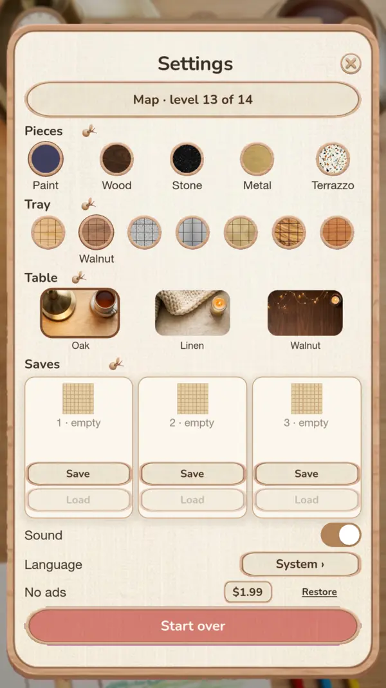

Игра Coffee Beans Studio
Koselig
Уютная деревянная головоломка. Уложите все фигуры в лоток — и не торопитесь.
Скоро в App Store и Google Play
Головоломка без спешки
Koselig — цифровой деревянный лоток-головоломка. Фигуры лежат на столе вокруг лотка: берёте, поворачиваете, укладываете — пока не заполнится каждая клетка.
Уровни ведут по карте — от маленьких лотков к полному. Уложить можно по-разному, а есть и идеальное решение, где фигуры одного цвета не касаются друг друга.
Не уверены, что позиция ещё сходится? Нажмите «Тупик?». Бонсай проверит её после короткого ролика, который вы сами решите посмотреть, — или сразу, если куплено «Без рекламы».


Кадры из игры



Что внутри
Три стола
Дуб, лён и орех — у каждого своя тихая жизнь: горит свеча, пар над чаем, лаванда на ветру.
Лотки и фигуры
Лотки из сосны, ореха, камня, стали, латуни, оливы и вишни. Фигуры — краска, дерево, камень, металл и терраццо.
Карта уровней
Лёгкие первые шаги на малых лотках, потом — полная головоломка.
Бонсай
Помощник в проверке «Тупик?» — и цветёт, когда уровень собран.
Позиции
Три ячейки, чтобы сохранить позицию и вернуться к ней.
Семь языков
Русский, English, Español, Deutsch, Français, Italiano и Polski.
Честно о рекламе
Ни баннеров, ни всплывающей рекламы. Короткий ролик — только когда вы просите проверку «Тупик?» и сами соглашаетесь его посмотреть. Одна необязательная покупка, «Без рекламы», — и проверка работает без роликов.
iPhone и Android · русский, English, Español, Deutsch, Français, Italiano, Polski